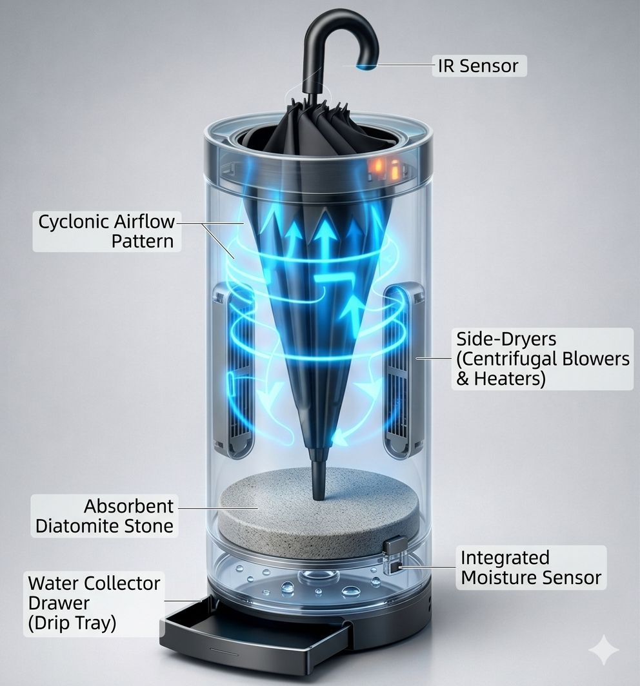

Our Product: AeroDry
A revolutionary umbrella drying system designed for modern indoor safety.

The Problem
Monsoon rains cause wet umbrellas to drip throughout indoor spaces, transforming lobbies and hallways into slippery, unsafe zones that lead to serious injuries and hospitalizations.
The Gap
Current solutions—like plastic bags or simple umbrella stands—are either environmentally wasteful or leave umbrellas soaking wet, failing to address the root cause of indoor water accumulation and floor safety.
The Solution
AeroDry provides a high-speed, contactless drying experience using side-mounted centrifugal blowers and a natural Diatomite stone base to instantly evaporate moisture and absorb runoff.
Impact (SDGs)
SDG 3: Good Health & Well-being
SDG 9: Industry, Innovation & Infrastructure
SDG 11: Sustainable Cities
SDG 12: Responsible Consumption